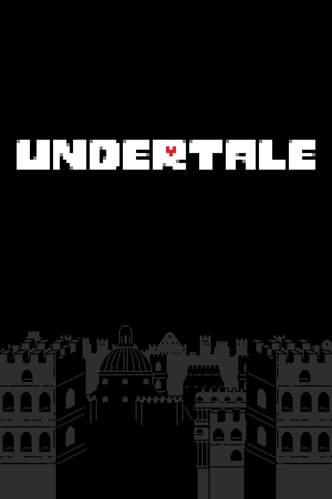
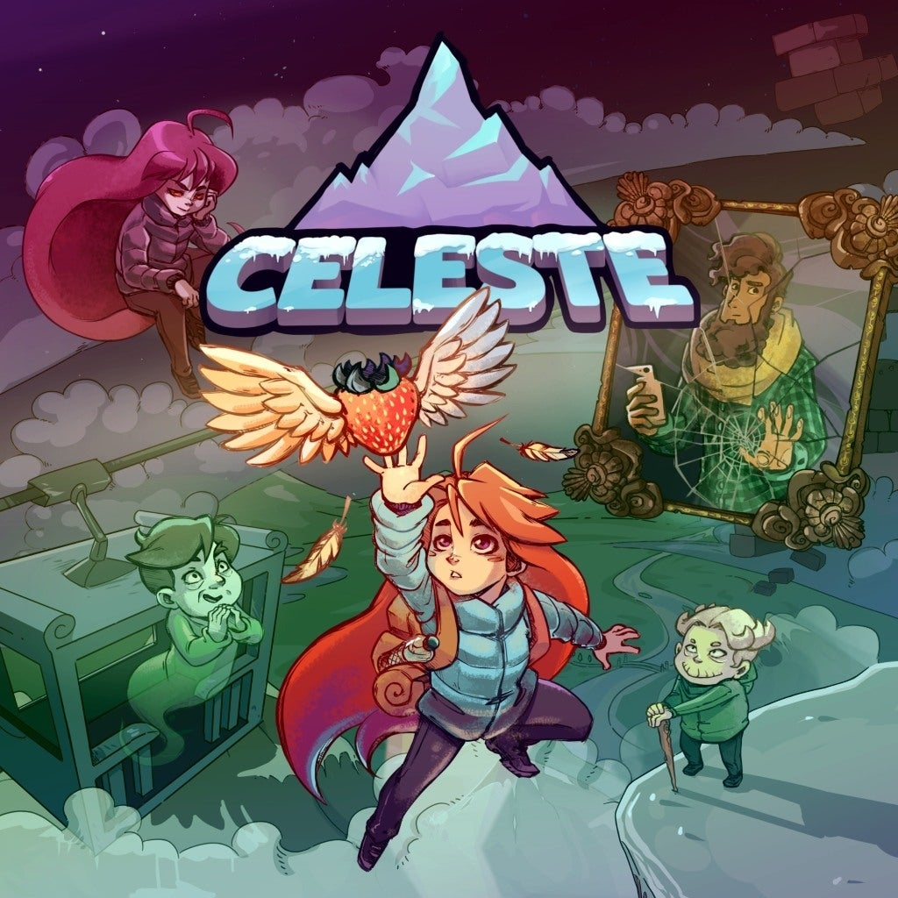
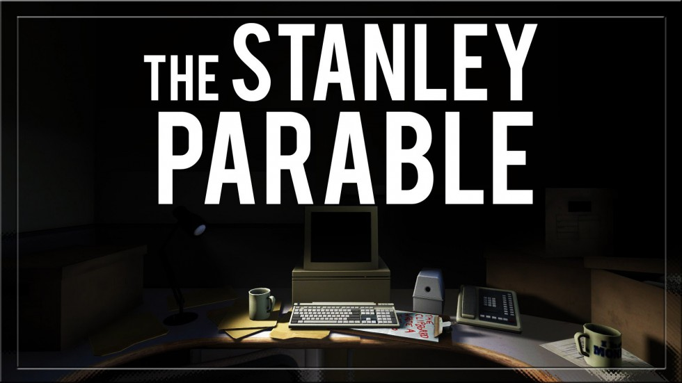
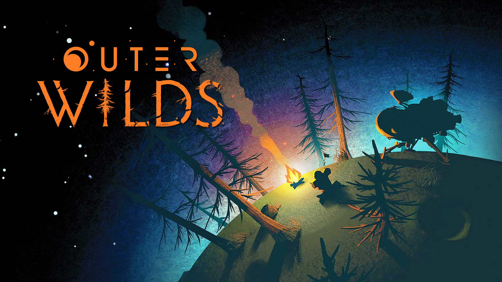

Indie Games are games not made by big game companies and
are contructed in small teams with love and passion.
These games aren't for everyone but there definitely is an
indie game for anyone. Some have beautiful storytelling, some
great enviornments, some have mind boggling puzzles, and some are just
tributes to classic videogames.
Undertale

Release Date: September 15, 2015 Rating: 10/10 Undertale is an RPG title, modeled artistically on games
like the Earthbound series, and decides to tell a unique story
that satirizes the world of gaming, teaching you to play differently
by popular throwing gaming tropes right out the window.The game will teach you to befriend your enemies, to turn combat
into comradery, and all the while; you’ll get to witness a killer
soundtrack and some of the most innovative solutions that see this
title compete with the best games of the era.
Celeste

Release Date: January 25, 2018 Rating: 10/10 This game has some of the tightest platforming mechanics,
caters to speedrunners, offers a challenging experience, and has a fast,
addictive gameplay loop—all the while keeping a minimalist,
pixelated presentation that you can’t help but love.Then just when you think this game is all about the gameplay,
the game captivates you with its wonderful, touching story,
which does a lot to raise awareness for depression and
mental health, which is not something often seen within the medium of gaming.
The Stanley Parable

Release Date: October 17, 2013 Rating: 9/10 This title sees you play as office droid Stanley who wants
to break free from the monotony of his simple, boring office job.
However, how this decision pans out will depend on what decisions
you make, your playstyle, how keen you are to explore, and your
ability to think outside the box.This game, much like Undertale, is a satirical game
that pokes fun at the gaming industry at large and does so
with aplomb. It’s not a ‘game’ per se. However, it’s an experience
that will stay with you long after you step away from this one.
So if you want to break free from the confines of traditional
gaming tropes, this is the one for you.
Cuphead
Release Date: September 29, 2017 Rating: 10/10 Cuphead spent years in development, and you can see every
second of that hard work on screen. Cuphead’s stunning
animation perfectly captures the look and feel of
classic 1930s cartoons and applies it to a retro-style, side-scrolling shooter.
The bombastic boss fights are a visual feast you’ll never get
tired of looking at again. That's great, as the challenging
difficulty forces you to replay sections again and again.
Outer Wilds

Release Date: May 28, 2019 Rating: 10/10 ‘Outer Wilds, simply put, is nothing short of being
one of the finest games to have released in recent memory.
Not only being a totally unique and challenging (whilst fair)
combat-free game, but being bundled now with the DLC (Echoes of the Eye),
which doubles the play time
of the game, acting closer to a fully-realised and s
atisfying sequel than a simple expansion.This is a game full of heart and smarts, and whilst some people will definitely
be put off by the huge amount of reading involved, this
interstellar trip is well worth getting stuck into the in-flight material.’
Outer wilds is an achievement the likes of which cannot be understated,
and it’s too soon to say for sure, but I personally hope that this
game has as much of an impact on Indie games as many of the other games on this list do.